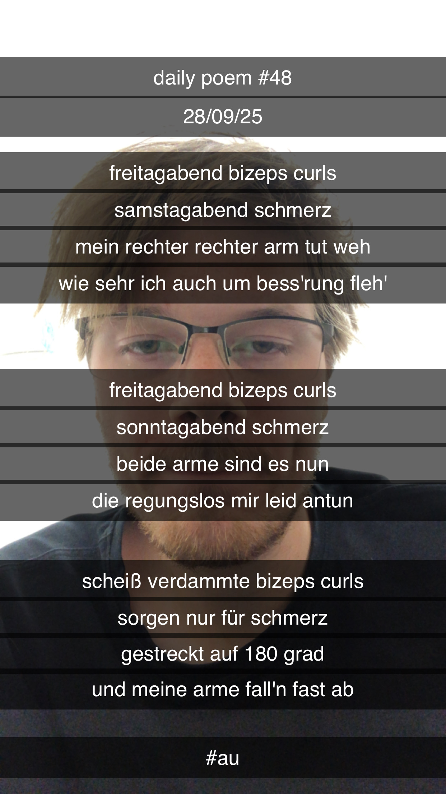

Bizeps-Curls
Freitagabend Bizeps-Curls,
Samstagabend Schmerz –
Mein rechter, rechter Arm tut weh,
Wie sehr ich auch um Bess'rung fleh';
Freitagabend Bizeps-Curls,
Sonntagabend Schmerz –
Beide Arme sind es nun,
Die regungslos mir Leid antun;
Scheißverdammte Bizeps-Curls,
Sorgen nur für Schmerz –
Gestreckt auf 180 Grad,
Und meine Arme fall'n fast ab.
